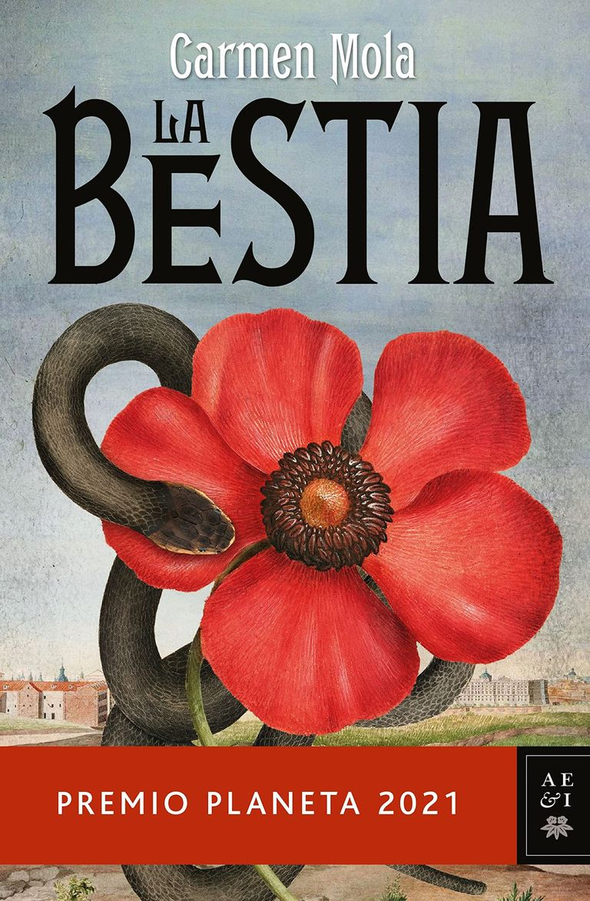
1. La Bestia de Carmen Mola
La novela ganadora del Premio Planeta de este año es un thriller
apasionante que transcurre en el Madrid de 1834 en medio de
una epidemia de cólera.
A los muertos por la enfermedad, se les suman
los cadáveres desmembrados que aparecen por la ciudad, víctimas
de "la bestia", un ser malvado al que nadie ha visto nunca.
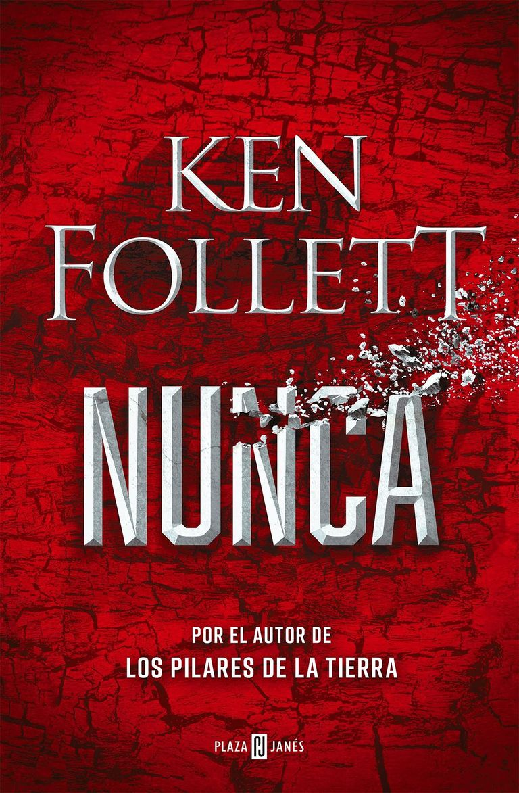
2. Nunca
Una historia deslumbrante de espías y terroristas que
interactúan en el mundo actual.
Un mundo que, en la
novela, parece acercarse casi inevitablemente hacia
un conflicto global que podría acabar con la civilización.
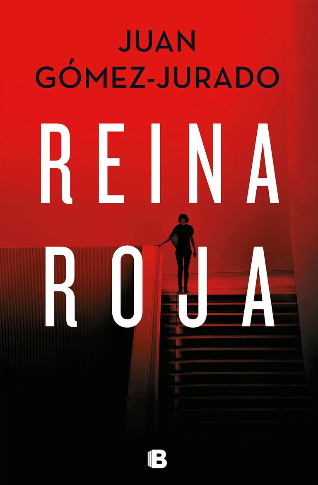
3. Reina Roja
En esta nueva obra, nos presenta a Antonia Scott una especie de señorita Marple que
ha resuelto multitud de crímenes, pero que hace mucho que no sale de su ático de lavapiés.
No obstante, eso está a punto de cambiar ya que Antonia va a recibir una visita que lo cambiará todo.
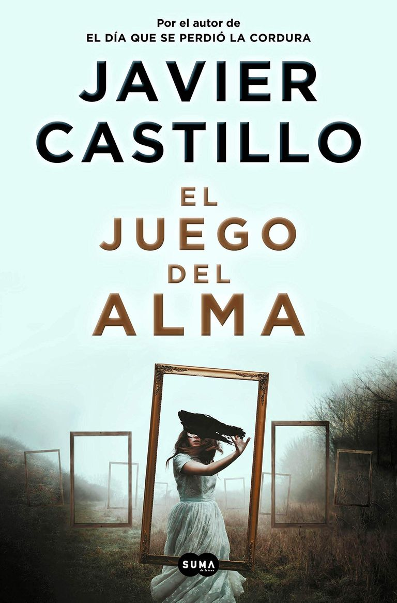
4. El juego del alma
No podía faltar en nuestra lista este estremecedor libro de Javier Castillo que nos
traslada a un Nueva York aterrado por la aparición de una chica crucificada víctima
de un extraño culto religioso lleno de secretos y enigmas.
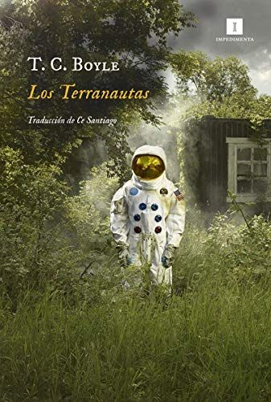
1. Los Terranautas de T.C Boyle
Ocho científicos participan en un experimento en un entorno que imita las
condiciones de Marte, pero situado en el desierto terrestre. Se pasan dos
años sin salir del recinto, cuidan de los animales, de su entorno, cultivan
y cosechan sus propios alimentos. ¿Idílico? Pues no.
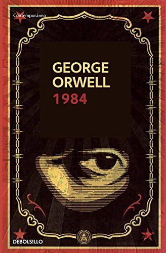
2. 1984
La acción transcurre en el
año 1984, en Londres, una ciudad lúgubre en la que la Policía del Pensamiento
controla de forma asfixiante la vida de los ciudadanos. Winston Smith es un
peón de ese engranaje perverso y su cometido es reescribir la historia para
adaptarla a lo que el Partido considera la versión oficial de los hechos.
Hasta que decide replantearse la verdad del sistema que los gobierna y somete.
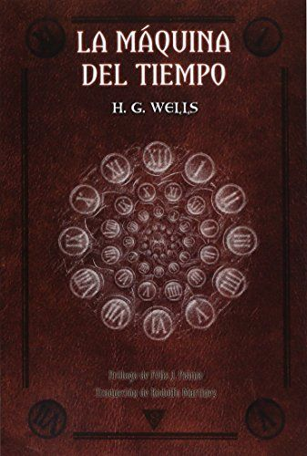
3. La Máquina del Tiempo de H.G Wells
Un científico victoriano inventa una máquina que le permite viajar hasta el
año 802701, se encuentra con una sociedad de personas altamente evolucionada,
los Eloi, para quienes el sufrimiento, aparentemente, ha sido reemplazado por
el refinamiento y la armonía. Sin embargo, las primeras impresiones son engañosas,
y su descubrimiento de la verdadera relación de los apacibles Eloi con los siniestros
Morlocks, criaturas del subsuelo, le lleva a una visión horrible del destino de la
humanidad que tiene sus raíces en su propia época.
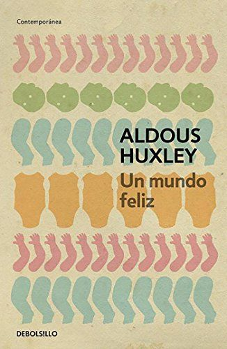
4. Un mundo feliz de Adous Huxley
La novela describe un mundo en el que finalmente
se han cumplido los peores vaticinios: triunfan los dioses del consumo y la comodidad,
y el orbe se organiza en diez zonas en apariencia seguras y estables. Sin embargo,
este mundo ha sacrificado valores humanos esenciales, y sus habitantes son procreados
in vitro a imagen y semejanza de una cadena de montaje. Las drogas aprobadas por el gobierno
y el sexo recreativo aseguran que todos sean consumidores felices e incuestionables;
las emociones confusas han sido anestesiadas y los apegos privados se consideran obscenos.
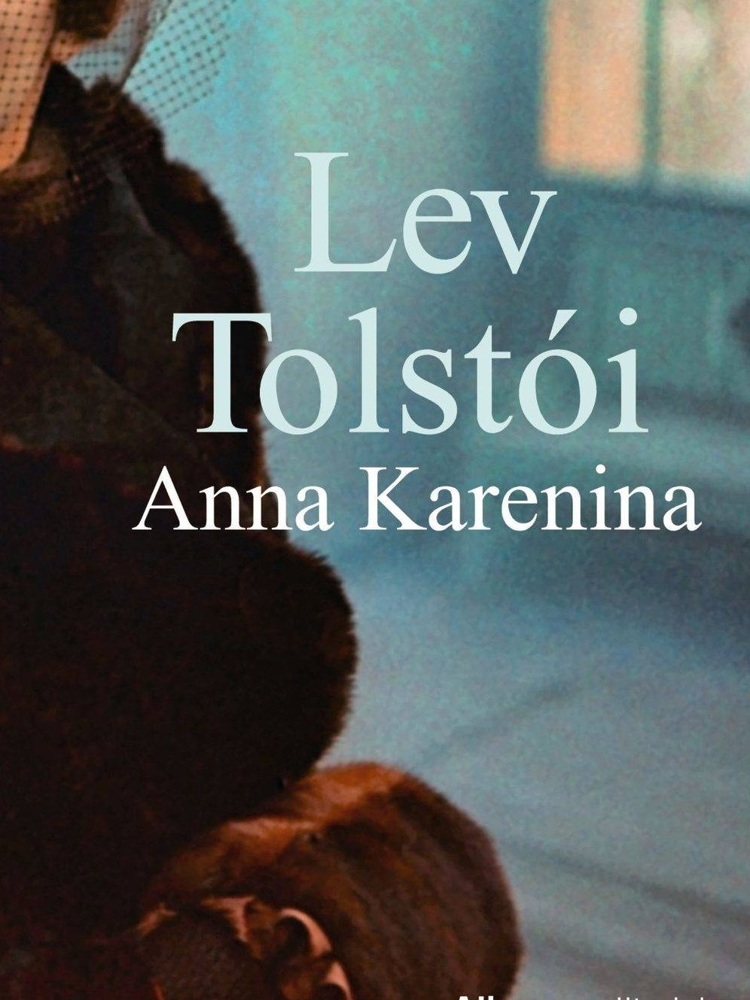
1. Anna Karenina de Leon Tolstoi
La protagonista que da título a la novela vivirá un amor apasionado hacia el joven
oficial Vronski, que le llevará a dejar a su marido e hijo, con un desenlace dramático.
El sentimiento de Anna Karenina es el hilo argumental que sirve al escritor ruso para
mostrar cómo es la verdadera sociedad de la época.
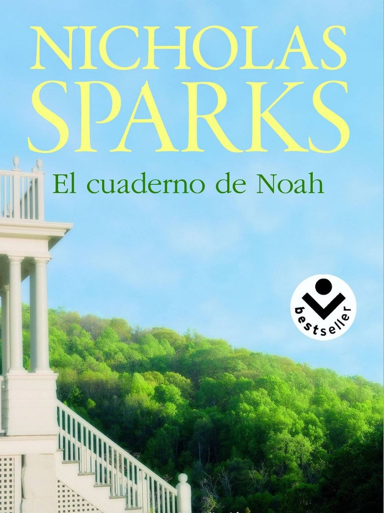
2. El Cuaderno de Noah de Nichola Spark
Gran historia de amor que se desarrolla en Carolina del Norte (EStados Unidos) en el año 1946.
El reencuentro de Noah Calhoun con Allie a la que conoció antes de la Segunda Guerra Mundial
desatará toda una serie de emociones en ambos jóvenes.
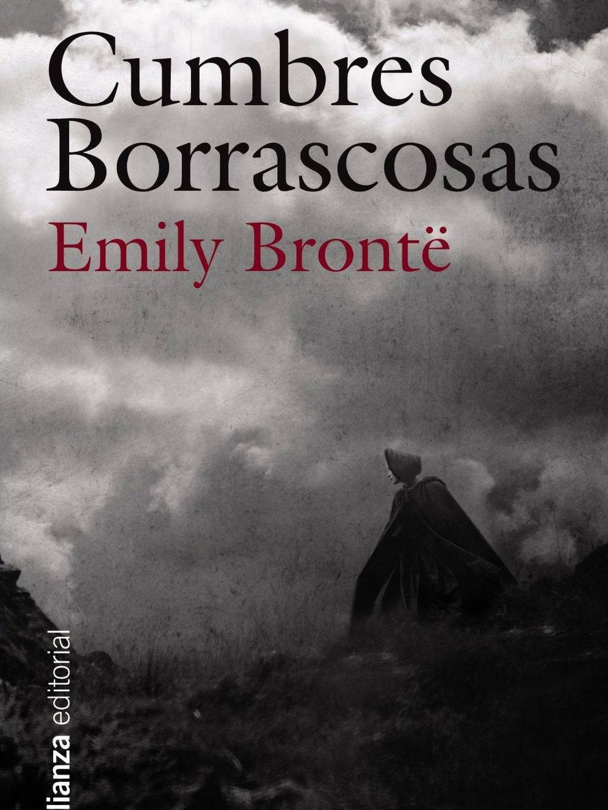
3. Cumbres Borrascosas de Emily Brontë
En esta obra literaria se aprecian todo tipo de sentimientos en su máxima
exacerbación: amor, odio, venganza, dolor, desesperanza… Tiene todos los
ingredientes que la han convertido en una de las mejores novelas románticas
de todos los tiempos.
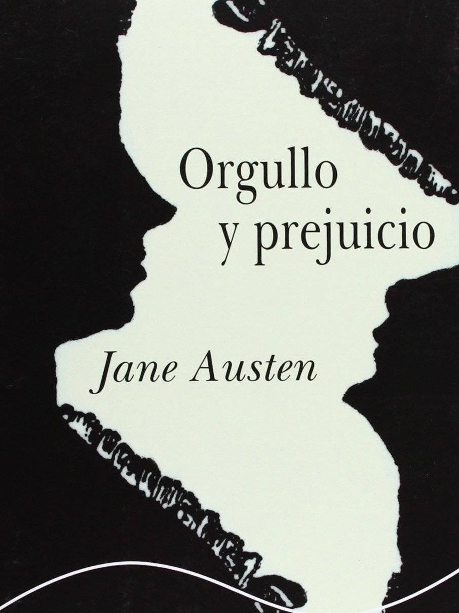
4. Orgullo y Prejuicio de Jane Austen
Novela costumbrista que transmite la realidad de determinadas mujeres en la Inglaterra
de principio del siglo XIX. Al leerla sentirás un cúmulo de emociones que no te dejarán
indiferente. Es tal la repercusión de la obra de Austen, que se han hecho múltiples adaptaciones
cinematográficas.

1. Feminismo para Principiantes
¿Quiénes eran las sufragistas? ¿De dónde sale el feminismo radical? ¿Por qué se habla de marxismo y
feminismo como de un matrimonio mal avenido? ¿Por qué el feminismo ha sido vilipendiado y ridiculizado?
¿Por qué las feministas han sido tratadas de «marimachos» feas o mujeres insatisfechas sexualmente?
¿Cómo y dónde surge la expresión «violencia de género»?
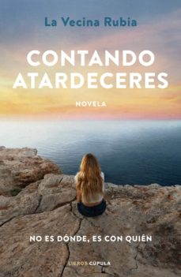
2. Contando Atardeceres
NO ES DÓNDE, ES CON QUIÉN
Hay veces que el destino se empeña en ponerte a una persona delante constantemente y, si algo he aprendido
con el tiempo, es que la vida puede darte segundas oportunidades. Tras el fallecimiento de mi padre, un viaje
improvisado con mi amiga Laura me regaló primero el «quién»: Javi y después el «dónde»: su isla.
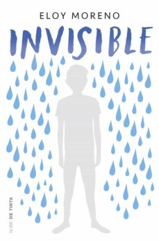
3. Invisible de Eloy Moreno
¿Quién no ha deseado alguna vez ser invisible?
¿Quién no ha deseado alguna vez dejar de serlo?
El problema es que nunca he llegado a controlar bien ese poder:
A veces, cuando más ganas tenía de ser invisible, era cuando más gente me veía, y en cambio, cuando deseaba
que todos me vieran, era cuando a mi cuerpo le daba por desaparecer.
4. Los recuerdos de los demás
Yoni José está terminando el bachillerato. Rose Rose, su madre, siente que al fin el destino le ha dado un respiro
y le muestra un espejismo de la felicidad. Yoni José reconstruye la peripecia increíble de su familia, pero al hacerlo
encuentra zonas oscuras, momentos que él no recuerda, por eso tiene que recurrir a los recuerdos de los demás.